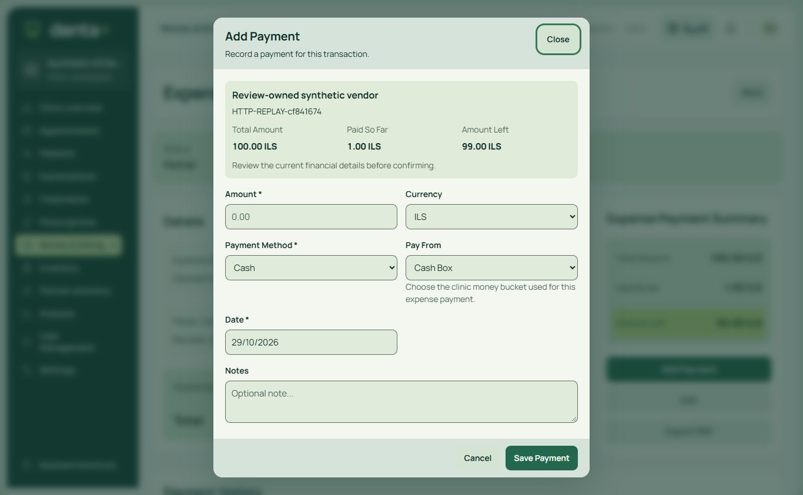
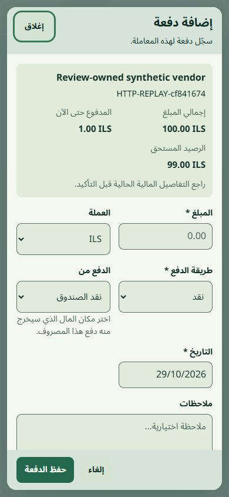

Financial replay and stale-state correction
Actual synthetic CI4 pages. Server facts and settlement revisions share the financial lock boundary. Studio composition retained. No production data or credentials.

English desktop: current facts and pinned request.
Arabic mobile: current-state task and existing payment controls.Sanitized SQL/concurrency/browser evidence ? Scope, compatibility and release gates